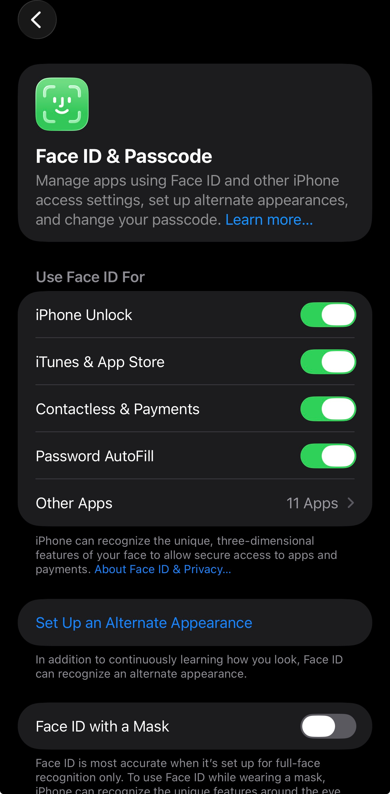
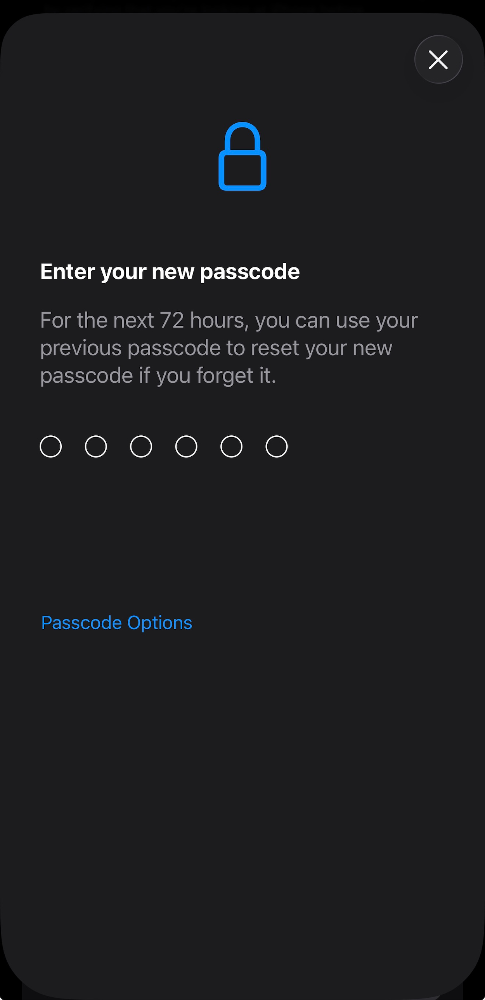

Propuesta de SGSI
Basado en el Anexo SL de las normas ISO/IEC 27001:2022
Descarga la propuesta formal del SGSI.
Área de aplicación: Departamento Easy.Go del área EDI número 4 de Robert Bosch Sistemas Automotrices, S.A. de C.V., ubicado en San Luis Potosí, donde se desarrollan aplicaciones mediante la plataforma OutSystems.
Propósito: Establecer, implementar, mantener y mejorar continuamente un marco de protección de la información conforme a ISO/IEC 27001 e ISO/IEC 27002, salvaguardando la confidencialidad, integridad y disponibilidad de los activos de información involucrados en el ciclo de vida del desarrollo de software.
Activos internos considerados
- ISO/IEC 27000: Visión general y vocabulario.
- ISO/IEC 27001:2022: Requisitos del SGSI.
- ISO/IEC 27002:2022: Controles de seguridad de la información.
- ISO/IEC 27034: Seguridad de las aplicaciones (OutSystems).
- ISO/IEC 27005: Gestión de riesgos de seguridad.
- ISO/IEC 27031: Preparación de las TIC para la continuidad del negocio.
Políticas internas (10 activos críticos)
| Activo | Política clave | Línea base / estándar |
|---|---|---|
| Bases de datos | Cifrado AES-256 y clasificación de datos | Cifrado en reposo y tránsito |
| Gestor DBMS | MFA, auditoría de accesos, control de roles | Acceso con MFA obligatorio |
| Servidores físicos | Control de acceso biométrico, sensores ambientales | Ubicación en CPD restringido |
| Almacenamiento en nube | Bloqueo de acceso público, IaC | Buckets privados, alertas de facturación |
| Respaldos (Backups) | Regla 3-2-1, inmutabilidad | Retención 30 días, backups offline |
| Dispositivos USB | Prohibición de USBs personales, cifrado | GPO solo lectura, puertos bloqueados |
| Laptops EDI | Cifrado de disco, EDR, bloqueo remoto | Bloqueo por inactividad 5 min (a mejorar a 3 min) |
| Teléfonos móviles | MDM, perfil de trabajo, PIN biométrico | PIN mínimo 6 dígitos o biometría |
| Control de versiones (Git) | Pull requests, escáner de código | Prohibido commit directo a main |
| VPN Cisco | Túnel cifrado sin split tunneling, MFA | Todo el tráfico pasa por firewall corporativo |
Políticas externas (10 activos externos)
| Activo externo | Política / control | Estándar |
|---|---|---|
| Proveedores Cloud | Exigir SOC 2 / ISO 27001 | Contratos con cláusulas de seguridad |
| Redes VAN (EDI) | Cifrado TLS 1.2+, AS2/SFTP | Rotación de certificados |
| APIs y Webhooks | Rate limiting, bóveda de secretos | Credenciales no incrustadas en código |
| Redes B2B (VPN site-to-site) | Túneles terminados en DMZ, ACLs estrictas | IPsec AES-256, DH grupo 14+ |
| Consultores externos | Cuentas con fecha de expiración | MFA obligatorio, mínimo privilegio |
| MSSP (SOC externo) | Enmascaramiento de logs PII | mTLS para envío de logs |
| Soporte remoto de terceros | PAM, sesiones grabadas | Sin transferencia de archivos bilateral |
| Dependencias Open Source | Análisis SCA (Software Composition Analysis) | Bloqueo por CVSS > 7.0 |
| Custodia off-site (backups físicos) | Cintas cifradas AES-256, cadena de custodia | Auditorías físicas anuales |
| Proveedores de identidad (IdP) | SAML 2.0 / OIDC, Geo-blocking | Acceso condicional por ubicación |
| ID | Riesgo | Probabilidad | Impacto | Nivel | Acción |
|---|---|---|---|---|---|
| INT-1 | Fuga de datos en texto plano | Probable (4) | Severo (5) | Extremo (20) | Mitigar (cifrado AES-256) |
| INT-2 | Accesos no autorizados al DBMS | Moderado (3) | Severo (5) | Muy Alto (15) | Mitigar (MFA, auditoría) |
| INT-3 | Daño físico a servidores | Poco probable (2) | Mayor (4) | Medio (8) | Mitigar (control biométrico) |
| INT-4 | Exposición accidental en nube | Probable (4) | Severo (5) | Extremo (20) | Mitigar (bloqueo público) |
| INT-5 | Pérdida irrecuperable de backups | Probable (4) | Severo (5) | Extremo (20) | Mitigar (regla 3-2-1) |
| INT-6 | Malware por USB no autorizado | Probable (4) | Mayor (4) | Muy Alto (16) | Mitigar (GPO solo lectura) |
| INT-7 | Robo de laptop con sesión activa | Moderado (3) | Mayor (4) | Alto (12) | Mitigar (EDR, bloqueo remoto) |
| EXT-1 | Brecha de proveedor cloud | Moderado (3) | Severo (5) | Muy Alto (15) | Transferir / Mitigar (auditoría) |
| EXT-3 | Abuso de APIs externas (DDoS) | Probable (4) | Mayor (4) | Muy Alto (16) | Mitigar (rate limiting) |
| EXT-8 | Vulnerabilidades en dependencias open source | Probable (4) | Severo (5) | Extremo (20) | Mitigar (SCA + bloqueo) |
Se evaluaron 20 riesgos en total. Los más críticos (Extremo) se mitigan con controles técnicos y organizacionales.
Política ejemplo: Teléfonos móviles del personal full-time – Autenticación biométrica obligatoria.
Línea base: MDM forzará PIN de 6 dígitos o autenticación biométrica.
Se implementa autenticación biométrica para garantizar que solo el titular autorizado desbloquee el dispositivo.
Aislamiento de aplicaciones corporativas de las personales, borrado remoto en caso de pérdida.
Evidencia de configuración (iPhone):


| No. | Política / Control | Estado | Evidencia / Observación |
|---|---|---|---|
| 1 | Política general de seguridad | Cumple | Documento firmado por Director de Planta |
| 2 | Revisión anual de políticas | No Cumple | Política de teletrabajo sin actualizar por 18 meses |
| 8 | Mínimo privilegio (Active Directory) | Cumple | Usuarios operativos sin Domain Admins |
| 10 | Gestión de altas y bajas | No Cumple | Cuentas de ex-empleados activas por más de 72h |
| 14 | Pruebas de restauración (DR) | No Cumple | Sin simulacro de restauración en el último año |
| 16 | Cifrado AES-256 en laptops | Cumple | BitLocker activo por GPO |
| 20 | Campañas de concientización | Parcial | Simulacro de phishing atrasado >1 año |
Resumen: 14 controles en cumplimiento, 4 incumplimientos, 2 parciales. Se emite plan de acción para corregir las desviaciones.
📌 Incidente: Robo de laptop corporativa en cafetería pública mientras el usuario se ausentó brevemente. La sesión estaba activa (no bloqueada manualmente).
⚡ Causa raíz: Factor humano (falta de cultura de bloqueo manual) + línea base de bloqueo automático demasiado amplia (5 min).
✅ Respuesta efectiva: Reporte en <1 hora → TI localizó dispositivo vía EDR → Borrado remoto exitoso → Cifrado AES-256 impidió acceso a datos.
Plan de acción preventivo
- 🔧 Reducir tiempo de bloqueo automático de 5 a 3 minutos (Baseline 3.0).
- 📚 Nuevo módulo de capacitación: "Custodia de activos en espacios públicos".
- ⌨️ Campaña “Win + L” (bloqueo manual instantáneo al alejarse del equipo).
- 📢 Simulacro de respuesta a incidentes físicos cada 6 meses.
Conclusión: Los controles técnicos (EDR, cifrado, borrado remoto) funcionaron, pero se requiere fortalecer la prevención humana y la configuración de línea base.
| Rol / Política | PM | Team Lead | Developer | Tester | TI | Seguridad |
|---|---|---|---|---|---|---|
| Gestión de bases de datos | A | R | C | I | I | I |
| Control de versiones (Git) | I | A | R | C | I | I |
| MDM móviles | A | R | I | I | C | I |
| Gestión de proveedores cloud | A | C | I | I | R | I |
| Respuesta a incidentes | I | R | C | I | A | R |
Leyenda: R=Responsable, A=Aprobador, C=Consultado, I=Informado.
- Objetivo: Reducir el riesgo humano mediante formación continua.
- Temas: Phishing, ingeniería social presencial, seguridad física de activos, uso de MFA, reporte de incidentes.
- Frecuencia: Capacitación anual + campañas de simulación de phishing semestrales.
- Resultado esperado: Disminución del “phish-prone percentage” en un 30% durante el primer año.
Minuta de la reunión de concientización realizada el 15 de mayo de 2026, con participación de Project Manager, Team Lead, Developers, Testers y TI.
Continuidad del negocio EDI, reducción de vulnerabilidades en OutSystems.
Confianza de clientes globales, alineación con estándares internacionales.
Controles robustos (MFA, cifrado, EDR, backups inmutables).
Cumplimiento total con ISO/IEC 27001:2022 y requisitos legales.
La implementación del SGSI protege los activos críticos del departamento EDI/4, fortaleciendo la cultura de seguridad y asegurando un futuro resiliente para Bosch México.